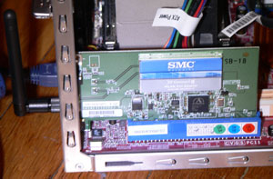

Can Ubuntu WPA with Airport Express?
Yes.
And it only took me five hours, three glasses of wine, and a big headache to get it working.
I know there’s a lot of whining about Ubuntu’s wireless networking support (and Linux’s in general). People expect whatever crappy hardware that works in XP (via some malware-esque taskbar blob) to work in Ubuntu, and only most of it does.

I didn’t want to be one of those people, so I bought the SMC SMCWPCI-G, a $25 PCI card with an Atheros chipset that’s automatically detected by Breezy’s “restricted-modules” package.
My little Biostar box only has one PCI slot, and it was taken by an Ethernet card connected to the Airport Express. The built-in Ethernet is attached to the real Internet. This box shares that connection, hands out address through DHCP, serves two websites, handles my e-mail in both directions, and purrs pleasantly through it all.
The whole point of this WiFi adventure was to physically separate the Airport Express and the server, since the DSL phone line is too far from my speakers to make use of AirTunes. (Modern life is complicated.) I was nervous about not having the second Ethernet as a backup, but I was won over by the idea of a stubby black antenna poking out of the server instead of USB-dongled box.
I swapped the two cards and the SMC was recognized and ready to transmit on the very next boot. Yay. All I had to do was set-up WPA through Breezy’s wpa_supplicant package, since the “madwifi” driver only does WEP (and I don’t do WEP).
Update: wpa_supplicant configuration is different for Dapper, and includes a newer version so compiling from source (described below) should not be necessary.
I should have known that WPA would be trouble. The crappy, recently purchased SonicWall wireless router we have at work can’t handle WPA with any system for more than five minutes. But I’ve had such an easy time at home with the Airport Express connected to Macs that I was lulled into a false sense of the WPA’s compatibility. (It works between two Apples. Duh.)
In fact, the version of WPA supplicant included in Breezy did not work with my Airport Express. It appeared to work. It connected to the network. But other computers couldn’t ping it, until it pinged them. Then they could ping it, or even ssh in. Weird. But after some idle time, it would stop working again. And I couldn’t serve DHCP, at all. Not good enough.
Tracing through tcpdump, at 2:30 in the morning, it didn’t seem right that every line listed “(oui Unknown)”. I Googled. I excluded French. Organisationally Unique Identifier. Great. I Googled some more. I read some French. No one seemed to be having this exact problem with wpa_supplicant. So I went to bed.
I didn’t want to compile my own drivers. I didn’t want to install startup scripts. I didn’t want things to break later on a dist-upgrade. Then I realized I could compile the latest version of wpa_supplicant and sneak its executables on top of the ones from the package without disrupting things too much. It was only a minor version upgrade, but it was worth a shot.
I had to download both wpa_supplicant 0.4.8 and madwifi-old for the compile, but I didn’t replace the Breezy madwifi installation. I just ran the newly compiled wpa_supplicant executable and it immediately fixed everything. No more “oui Unknown”s in the tcpdump, and the DHCP server handed out addresses just fine. So I replaced the three executables in /usr/sbin with the new ones. Rebooted and…
:D
For the record, here’s my /etc/wpa_supplicant for an Airport Express private WPA network named “11” :
ctrl_interface=/var/run/wpa_supplicant
ctrl_interface_group=0
eapol_version=2
ap_scan=1
fast_reauth=1
network={
ssid="11"
scan_ssid=1
key_mgmt=WPA-PSK
psk=HEXCODE?NOQUOTES.OTHERWISEQUOTES!
}
Add a comment